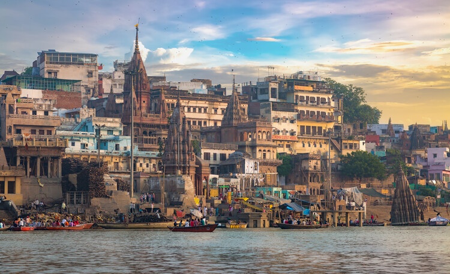

Japón es una nación insular del océano Pacífico con densas ciudades, palacios imperiales, parques nacionales montañosos y miles de santuarios y templos. El tren bala Shinkansen conecta las islas principales de Kyushu (con las playas subtropicales de Okinawa), Honshu (con Tokio y el memorial del bombardeo atómico en Hiroshima) y Hokkaido (famosa por el esquí). Tokio, la capital, es famosa por sus rascacielos, el comercio y la cultura pop
Mis razones para visitarlo son: La próspera escena gastronómica, El amplio espectro de cocinas, Impresionantes flores de primavera, El sake finamente elaborado ,Actividades festivas de verano, Glorioso follaje otoñal, Refrescante clima invernal y Yuxtaposiciones en Tokio.
Brasil es un vasto país de Sudamérica que se extiende desde la Cuenca del Amazonas en el norte hasta los viñedos y las enormes cataratas del Iguazú en el sur. Río de Janeiro, simbolizado por su estatua de 38 m del Cristo Redentor sobre el cerro del Corcovado, es famoso por sus ajetreadas playas Copacabana e Ipanema, junto con su enorme y estridente festival del Carnaval, que cuenta con carros alegóricos, exuberantes disfraces y danza y música samba
Es sin duda una de las experiencias más increíbles que puedes vivir en vacaciones. El país es uno de los más visitados de Latinoamérica gracias a su belleza natural, gastronomía inigualable, diversidad cultural, clima tropical, ciudades históricas, playas espectaculares y mucho más.
es un vasto país de Asia del Sur con un terreno diverso que abarca desde las cumbres del Himalaya hasta la costa del océano Índico. Tiene una historia de más de 5 milenios. En el norte, los monumentos históricos del imperio Mogol incluyen el complejo del Fuerte Rojo de Delhi y la enorme mezquita de Jama Masjid, junto con el icónico mausoleo del Taj Mahal en Agra. Los peregrinos se bañan en el Ganges en Varanasi, y Rishikesh es un centro de yoga y una base para las excursiones al Himalaya.

Sus Playas. Las playas de la India son absolutamente recomendables, Su Arquitectura. Si te gusta la arquitectura, podrás gozar viendo mezclas arquitectónicas de distintas culturas milenarias y Su cultura, sus tradiciones y el Ganges.